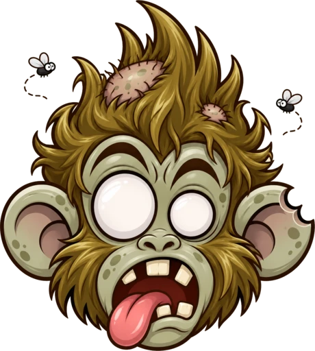

0
Fresh
“Nothing is rotten yet.”

A monkey that rots with every reel you watch.
Download for AndroidFree beta. 19 MB. Not on iPhone yet.
“Nothing is rotten yet.”
“One more? You said that before.”
“You are watching a stranger cook.”
“You learned a dance. Not your syllabus.”
“Flies are making a reel about you.”
He roasts you in English, Hindi or Telugu, right on top of your reels.
Or make a promise: no extras at all.
Example names and numbers.
This happens with apps from outside the Play Store. Go to Settings, Apps, Doomky, tap the ⋮ at the top right, then Allow restricted settings. Go back and turn Doomky on.
Only inside Instagram and YouTube, and only which screen is open and when you move to the next reel. It can't read captions, messages or anything you type. Details are in the privacy policy.
If you log in, your name and reel count are on the public board. If you don't, nothing leaves your phone.
No. Paying a friend opens your own UPI app, and you enter your own PIN. Bananas are points you earn. You can't buy them or cash them out.
Some phones shut apps down to save battery. In Doomky, open You, the gear, then Keep Doomky running.
Doomky tells you when a new version is ready. Download it here again and install it over the old one. Your counts stay.
This is an early beta. Tell us here, or message the friend who sent you this link.